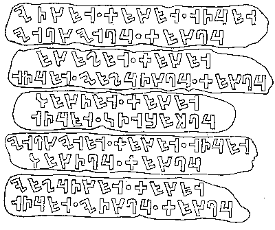

Acertijo original de Anna K. Polivanova. Adaptación al inglés de Mirjam Fried y Thomas E. Payne.
Durante la Edad de Bronce y la Edad de Hierro (del 2000 a. C. al 100 d. C., aproximadamente), muchas culturas europeas anteriores a los romanos experimentaron con sistemas de escritura. Las siguientes son cinco inscripciones antiguas parecidas a las que se encuentran en las lápidas de los reyes de Europa Central. Todo lo que se sabe de estas inscripciones es que contienen el mismo texto (un epitafio), que todas están escritas en la misma lengua y con el mismo sistema de escritura, y que cada una fue escrita en una época distinta.

Para hablar de ellas, numeremos las lápidas del 1 al 5, de arriba abajo.
Tus tareas son: